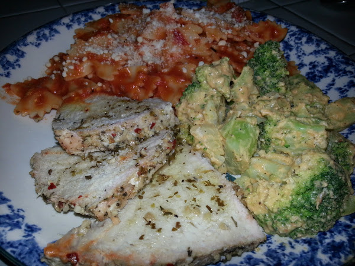

On this page, you will find both reviews of restaurants as well as home receipes
and critiques.
Pork Tenderloin
Preparer: Gabe

Dry rubbed roasted garlic spice mix
Baked at 350° for approximately 1.5 hours
Drizzled with a balsamic vinegar
Served with sides of pasta with a red sauce and broccoli with a hummus sauce
Review: Presetation is ok, broccoli could have look nicer. Flavor in broccoli was kind of bland.
pasta looked and tasted good. Pork flavor was good, however, was little on the drier side. Overall,
the meal could be prepared a little better.